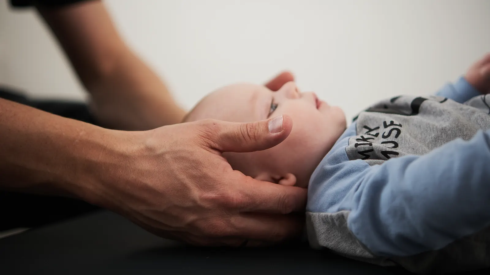
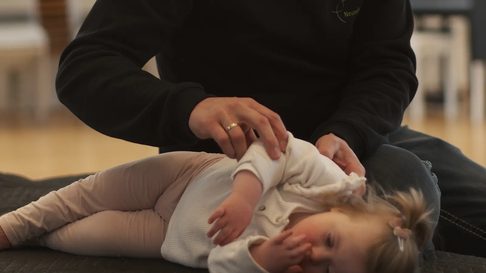
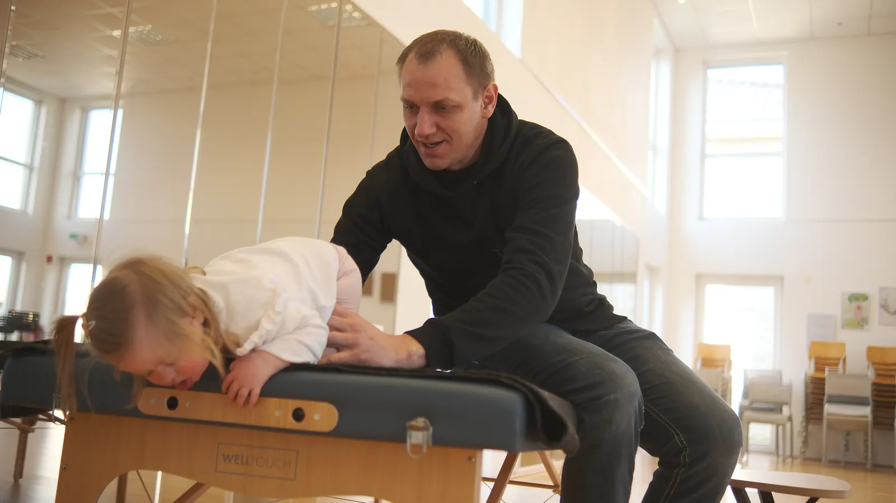
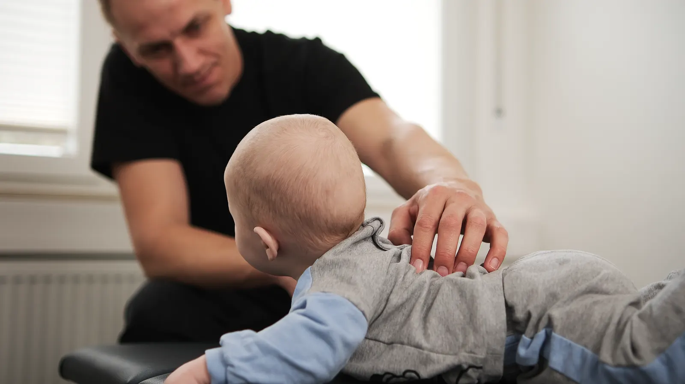
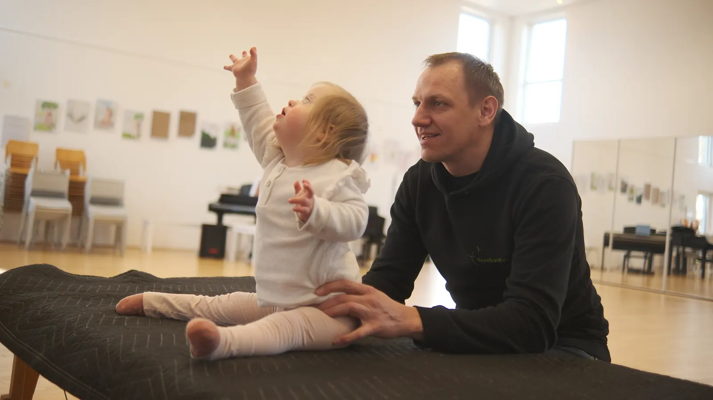

Muskelhypotonie beim Baby: Was der „schwache Muskeltonus" bedeutet
Dein Baby wirkt „weich", hält den Kopf kaum? Warum die Ursache im Nervensystem liegt – und welche sanften Wege es ergänzend gibt.

Zerebralparese: Welche Wege es neben der klassischen Therapie gibt
Physiotherapie läuft, und trotzdem fragt ihr euch: Gibt es noch etwas? Eine ehrliche Einordnung ergänzender neuroplastischer Impulse.

Mein Kind entwickelt sich langsamer – was Eltern jetzt tun können
Drehen, krabbeln, laufen: Wann Abwarten okay ist, wann du genauer hinschauen solltest – und warum du nicht tatenlos warten musst.

Wie läuft NeuroScanBalance ab? Einzel-Lesson & Intensiv-Wochenende
Von der einzelnen Lesson über den Intensivblock bis zur wichtigen Integrationspause danach – der typische Ablauf Schritt für Schritt.

NeuroScanBalance bei Kindern: Für wen die Methode gedacht ist
Warum das kindliche Nervensystem besonders gut anspricht und bei welchen Themen Familien zu mir kommen – schon ab dem Säuglingsalter.

NeuroScanBalance oder Physiotherapie? Der Unterschied erklärt
Wo liegt der Unterschied – und muss man sich wirklich entscheiden? Eine ehrliche Einordnung, warum sich beides oft gut ergänzt.

Was ist NeuroScanBalance? Die sanfte Methode einfach erklärt
Neuroplastizität, sanfte Bewegungsimpulse, schmerzfrei – die Grundidee der Methode, so wie ich sie am Küchentisch erklären würde.